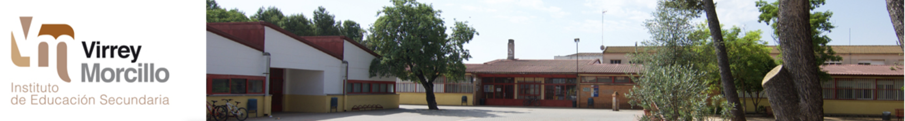

Briefing curso 20/21

En esta página encontrarás:
Información de contacto del alumno
Enlaces de interés
El horario de las clases
Una lista de los módulos que estudiaremos
Módulos
Horario
Junta Castilla La Mancha
IES Virrey Morcillo
Santiago Alarcón Sanchez, salarc02@ucm.es,
C/General Primm, 2
, turno A